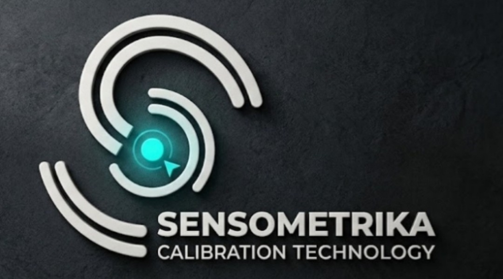

6. Espirometría Ocupacional Pro
Tome aire profundamente y mantenga un soplo continuo hacia el dispositivo durante 20 segundos.
20s
Listo para calibrar flujo respiratorio
Nivel de Soplo: 0.0 L/s (Sin Soplo)